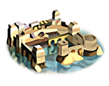
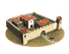

RTR: Imperium Surrectum
RTR: Imperium SurrectumWhat is already built
| Building chain | Level | Building chain | Level | Building chain | Level | Building chain | Level | ||||
|---|---|---|---|---|---|---|---|---|---|---|---|
| Government (governor) | Governor's Villa | Walls | Wooden Palisade | Granary | Small Granary (Food trade) | Government (indirect rule) | Indirect Rule | ||||
| Sanitation | Cisterns (Sanitation) | Region Information | Region Information Scroll | Roads | Roads | Irrigated Farming (crops) | Basin Irrigation (Crops) | ||||
| Traders | Local Barter |  | Ports | Trade Port | Temples | Shrine |  | Garrison | Waystations and Garrisons |
What can be recruited here
| Unit | Raised at | Cost | Upkeep | Unit | Raised at | Cost | Upkeep | Unit | Raised at | Cost | Upkeep | |||
|---|---|---|---|---|---|---|---|---|---|---|---|---|---|---|
| Lycian Archers | Region Information Scroll | 1,306 | 478 | Lycian Drepanophoroi | Region Information Scroll | 1,562 | 572 | Lycian Hoplites | Region Information Scroll | 1,672 | 612 | |||
| Lycian Marines | Region Information Scroll | 1,692 | 619 |
14 more units once the building is up — greyed out, with what each needs.
14 units this settlement raises once you build for them
| Unit | Once you have | Cost | Upkeep | Unit | Once you have | Cost | Upkeep | Unit | Once you have | Cost | Upkeep | |||
|---|---|---|---|---|---|---|---|---|---|---|---|---|---|---|
| Akontistai | Homeland | 804 | 294 | Greek Archers | Homeland | 1,082 | 396 | Greek Hoplites | Homeland | 1,647 | 603 | |||
| Greek Peltasts | Homeland | 1,050 | 384 | Greek Slingers | Homeland | 916 | 335 | Machairophoroi Cavalry | Homeland | 1,522 | 613 | |||
| Machimoi Archers | Homeland | 1,510 | 553 | Prodromoi | Homeland | 1,343 | 541 | Ptolemaic Machairophoroi | Homeland | 1,576 | 577 | |||
| Thureophoroi | Homeland | 1,740 | 637 | Thureophoroi Cavalry | Homeland | 1,513 | 609 |
| Unit | Once you have | Cost | Upkeep | Unit | Once you have | Cost | Upkeep | |||||||
|---|---|---|---|---|---|---|---|---|---|---|---|---|---|---|
| Ballistas | Armourer (Industry), Foundry (Industry) | 1,797 | 658 | Lithoboloi | Armourer (Industry), Foundry (Industry) | 2,592 | 949 |
| Unit | Once you have | Cost | Upkeep | |||||||||||
|---|---|---|---|---|---|---|---|---|---|---|---|---|---|---|
| Large Lithoboloi | Foundry (Industry) | 3,132 | 1,146 |